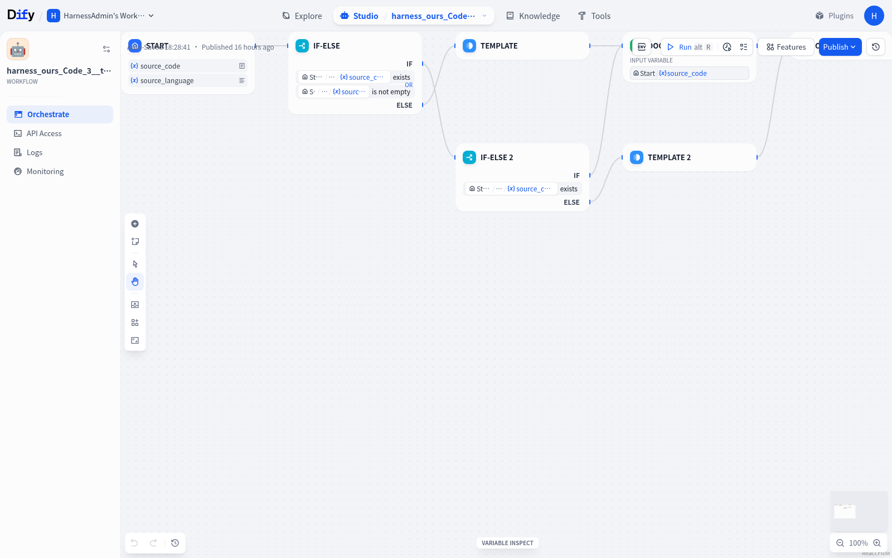
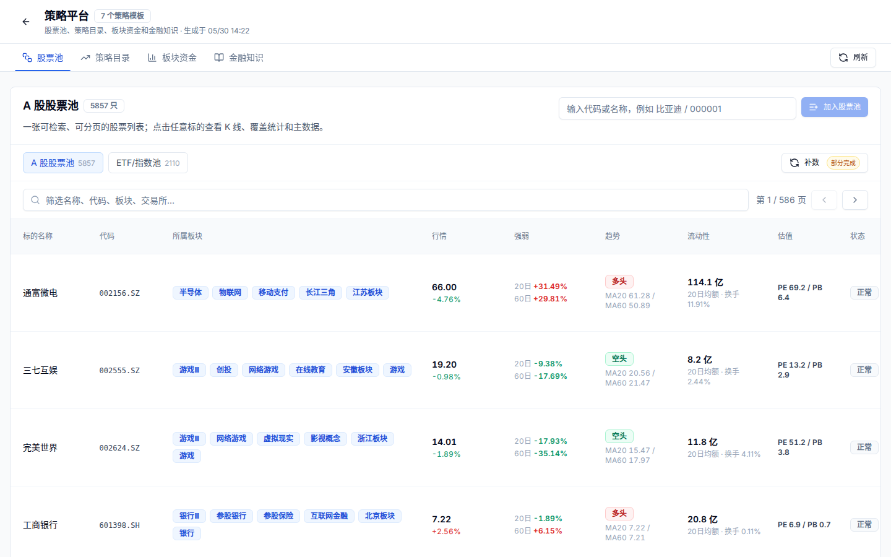

PeaceMaker · Agent Engineering
Make agents
useful.
I build practical agent systems that plan, use tools, remember context, and verify their work.
The big vision
Agents are far
from finished.
Better planning. Real tools. Useful memory. Verifiable outcomes. The next generation of agents should do more than respond — they should reliably get work done.
01 · Agent workflow assurance
WorkflowIR
Harness
A deterministic assurance harness that turns generated Dify workflows into importable, executable, and verifiable artifacts.

02 · Quantitative research
Buffett
A personal quantitative-research workspace that turns natural-language questions into stock screening, backtests, evidence, and interactive dashboards.
Portfolio build based on tiammomo/QuantPilot · MIT.
03 · Model infrastructure
PocketModel
A self-hosted LLM gateway with model routing, quotas, provider health, request evidence, and operations built into one reliable control plane.
Operations overview
Reliable model traffic, at a glance.
Writing
Articles.
Practical notes on agent systems, model design, and experiments from first principles.
Keep building
One working
system at a time.
Ideas matter. Reliable execution matters more.
Continue on GitHub